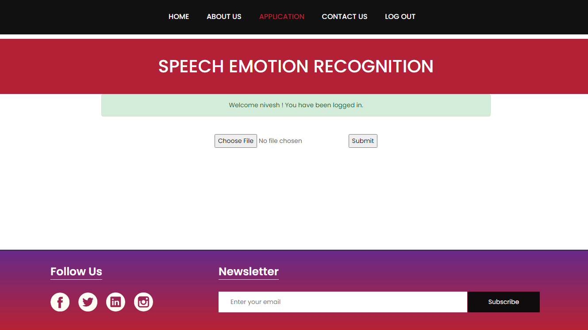

Results
Home Page
The home page serves as the entry point for this project, offering users four main options:
- Home: Users can return to the home page from any section of the website.
- About Us: Provides information about the project and its creators.
- Contact Us: Users can reach out for inquiries or feedback.
- Log In: Registered users can access the system's features and predict speaker emotions.

The home page acts as a central hub for user navigation, facilitating exploration of the project's functionalities.
User Registration Page
The user registration and login management system in the UI allows new users to create accounts by providing their name, email, and password. The user information is stored in a MySQL database.
User Login Page
After successfully registering, users can log in using their email and password credentials.
About Us Page
The About Us page provides information about the project and serves to educate users about emotion recognition in the digital world.
Application Page
In the Application page, users can choose and upload audio files of speakers or persons. The file extension must be in (.wav format). After uploading, they can submit the file using the provided submit button.
After submitting the audio file, the system detects the speaker's emotion using the model, and the result is displayed on the screen.

Contact Page
The Contact Us page provides users with a convenient way to get in touch and allows for communication and assistance regarding the model. It includes the following elements:
- Name: Users can provide their name.
- Email: Users can enter their email address for responses.
- Phone Number: Users can provide their phone number for contact.
- Subject: Users can specify the subject of their inquiry or message.
- Message: Users can type a message with their questions or comments related to the model.
The Contact Us page is designed to facilitate communication and help address any problems or queries users may have regarding the emotion recognition model.